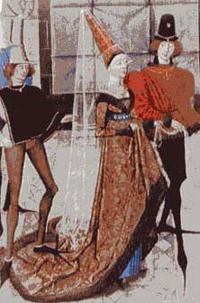
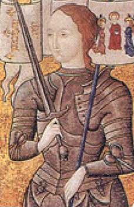

 |
Период
ранней Готики (до ХI в.)
На смену свободной драпированной одежде появилась одежда
обтягивающая тело человека.
В средние века, отмеченные междоусобицами и Крестовыми походами,
корсет носили не столько женщины, сколько мужчины. Широкое
распространение приобретают штаны и курточка - колет
(=>) выполняющая роль
мужского корсета. Гладкий и жесткий, колет имитировал
твердость панциря и находился в близкой связи с военным костюмом,
предназначенным для защиты пеших воинов.
В
женской одежде
использовались железные и деревянные бруски,
которые вставлялись в ватную подкладку одежды. Бруски располагались
между грудными железами и тянулись сверху до нижней части живота.
Поздняя Готика XI–XII вв.
Стремление подчеркнуть фигуру покроем платья привело
к появлению в одежде узкого корсетного жилета, так называемого бандо-пояса
(<=)
, который еще не являлся корсетом, но подчеркивал
формы фигуры и поддерживал грудь.
Для того, чтобы лиф более четко обрисовывал грудь и
плечи, по бокам стали использовать шнуровку.
|

|